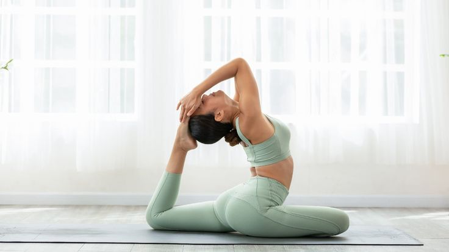
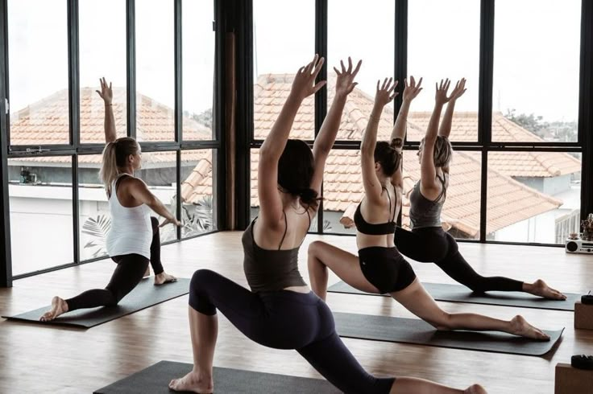

Praktik Mindfulness Harian untuk Mengurangi Stres
14 April 2025 · Dewi Lestari
Olahraga teratur dapat membantu meningkatkan kesehatan mental dengan mengurangi stres...
Mengurangi Hormon Stres
Aktivitas fisik seperti berjalan kaki selama 30 menit bisa memicu pelepasan endorfin...
Meningkatkan Kualitas Tidur
- Membantu mengatur ritme sirkadian tubuh
- Meningkatkan durasi dan kualitas tidur
- Mengurangi gejala insomnia dan gangguan tidur
Meningkatkan Kepercayaan Diri dan Citra Diri
Olahraga juga membantu meningkatkan rasa percaya diri dan citra tubuh secara keseluruhan...
Kesimpulan
Dengan olahraga teratur, kita bisa meraih banyak manfaat kesehatan mental. Bahkan aktivitas kecil pun berdampak besar.
Artikel Terkait
Gaya Hidup
Panduan Lengkap Nutrisi Seimbang

Kesehatan
7 Kebiasaan untuk Kualitas Tidur Lebih Baik
Keluarga
Manfaat Aktivitas Outdoor untuk Keluarga
Komentar (8)
Dewi Lestari
17 April 2025, 09:21
Artikel ini menjelaskan dengan baik mengenai stres...
Budi Santoso
14 April 2025, 14:35
Artikel yang sangat informatif...